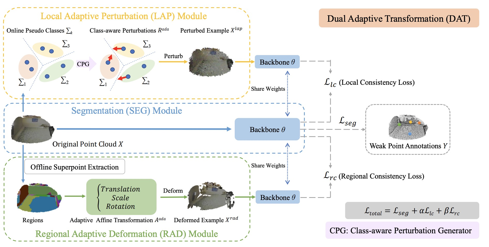

|
Yicheng(Eli) Wu 吴轶成Ph.D. CandidateAffiliation: Faculty of Information Technology, Monash UniversityCurrent Address: Clayton, VIC 3168, Australia Email: yicheng[dot]wu[at]monash[dot]edu Google Scholar • ResearchGate • LinkedIn • GitHub |
Biography
- Introduction
- Education Backgrounds
- 2021.06-Present • Ph.D. Candidate • Supervisor: Prof. Jianfei Cai (IEEE Fellow) and A/Prof. Zongyuan Ge.
- 2017.09-2020.04 • M.E. Degree • Supervisor: Prof. Yong Xia.
- 2018.11-2019.05 • Visiting Student • Supervisor: A/Prof. Weidong(Tom) Cai and A/Prof. Yang Song.
- 2013.09-2017.06 • B.E. Degree • Supervisor: Prof. Yong Xia.
- Working Experiences
- 2023.12-Present • Research Intern • Shanghai AI Lab
- 2023.03-2023.12 • Research Assistant • Monash, Faculty of IT
- 2020.08-2021.05 • Research Intern • Alibaba DAMO Academy
- 2019.05-2019.09 and 2020.05-2020.08 • Research Intern • Deepwise AI Lab
-
Hi, I am currently a final-year Ph.D. student at Monash University, where my research focuses on developing a robust learning framework for medical image analysis.
Some of my earlier works are about studying imperfect learning scenarios, such as limited/heterogeneous data training, weakly/semi-/unsupervised image segmentation,
as well as the analysis of specific objects like retinal vessels or brain lesions.
Faculty of Information Technology, Monash University, Australia
School of Computer Science and Engineering, Northwestern Polytechnical University, China
School of Computer Science, The University of Sydney, Australia
School of Computer Science and Engineering, Northwestern Polytechnical University, China
News
- [2024.03.04] We will host a grand challenge about multi-rater medical image segmentation in ACM MM 2024.
- [2024.02.27] One paper was accepted by CVPR 2024. Paper and Code will be released soon.
- [2023.12.07] One journal paper was accepted by IJCV (IF-2023: 19.5), see Paper and Code. Congrats. to Zhonghua.
- [2023.10.12] I am very pleased to be selected as an IEEE Transactions on Medical Imaging (TMI) Distinguished Reviewer.
- [2023.07.25] I am very pleased to receive the 2023-FIT-Dean's Award for Excellence in Research by a Graduate Research Student.
- [2023.07.11] One paper was early accepted by MICCAI 2023, about Heterogeneous Data Training.
- [2022.07.04] One paper was accepted by ECCV 2022, about Weakly-Supervised Point Cloud Segmentation.
- [2022.07.01] One journal paper was accepted by MedIA (IF-2022: 13.828), see here.
- [2022.06.06] One journal paper was accepted by IEEE JBHI (IF-2022: 7.021), see here. Congrats. to Yiwen.
- [2022.06.03] Two papers were accepted by MICCAI 2022, about Semi-supervised Segmentation and Long-tailed Classification.
- [2022.03.03] One joint paper was accepted by CVPR 2022, about Unsupervised Proposal Generation.
- [2021.06.11] One paper was accepted by MICCAI 2021.
- [2020.08.01] During my gap year, I will work as a research intern at DAMO Academy, Alibaba Group.
- [2020.05.12] I received the M.E. degree from Northwestern Polytechnical University, supervised by Prof. Yong Xia.
- [2020.02.27] One journal paper was accepted by Neural Networks (IF-2020: 8.050).
- [2019.06.05] One paper was accepted by MICCAI 2019.
- [2018.05.31] I was selected as a joint master student supported by the China Scholarship Council (CSC).
- [2018.05.30] One paper was accepted by MICCAI 2018.
- [2017.06.20] I received the B.E. degree from Northwestern Polytechnical University, supervised by Prof. Yong Xia.
Representative Publications
-
* and † indicates the corresponding authorship and equal contribution, respectively.
Recent Works
 |
Qingjie Zeng, Yutong Xie, Zilin Lu, Mengkang Lu, Yicheng Wu, and Yong Xia Segment Together: A Versatile Paradigm for Semi-Supervised Medical Image Segmentation arXiv Print, 2023. [Paper] |
 |
Lie Ju, Yicheng Wu, Feng Wei, Zhen Yu, Lin Wang, Zhuoting Zhu and Zongyuan Ge* Towards Open-Scenario Semi-supervised Medical Image Classification arXiv Print, 2023. [Paper] |
Task-based Works(Application-oriented, 2023-Now)
 |
Yicheng Wu*, Zhonghua Wu, Hengcan Shi, Bjoern Picker, Winston Chong, and Jianfei Cai CoactSeg: Learning from Heterogeneous Data for New Multiple Sclerosis Lesion Segmentation MICCAI 2023, vol. 14227, pp. 3-13, 2023. [Paper, Code] |
Data-based Works(Semi-supervised Learning, 2020-Now)
| Yicheng Wu*, Zongyuan Ge, Donghao Zhang, Minfeng Xu, Lei Zhang, Yong Xia and Jianfei Cai Mutual Consistency Learning for Semi-supervised Medical Image Segmentation Medical Image Analysis (IF-2022: 13.828), vol. 81, pp. 102530, 2022. [Paper, Code] | |
 |
Zhonghua Wu†, Yicheng Wu†, Guosheng Lin* and Jianfei Cai Reliability-Adaptive Consistency Regularization for Weakly-Supervised Point Cloud Segmentation International Journal of Computer Vision (IF-2023: 19.5), 2024. [Paper, Code] |
| Yicheng Wu*, Zhonghua Wu, Qianyi Wu, Zongyuan Ge, and Jianfei Cai Exploring Smoothness and Class-Separation for Semi-supervised Medical Image Segmentation MICCAI 2022, vol. 13435, pp. 34-43, 2022. [Paper, Code] | |
 |
Yicheng Wu, Minfeng Xu, Zongyuan Ge, Jianfei Cai*, and Lei Zhang Semi-supervised Left Atrium Segmentation with Mutual Consistency Training MICCAI 2021, vol. 12902, pp. 297-306, 2021. [Paper, Code] |
|  | Zhonghua Wu, Yicheng Wu, Guosheng Lin*, Jianfei Cai, and Chen Qian Dual Adaptive Transformations for Weakly Supervised Point Cloud Segmentation ECCV 2022, vol. 13691, pp. 78-96, 2022. [Paper, Code] |
 |
Lie Ju, Yicheng Wu, Lin Wang, Zhen Yu, Xin Zhao, Xin Wang, Paul Bonnington and Zongyuan Ge* Flexible Sampling for Long-tailed Skin Lesion Classification MICCAI 2022, vol. 13433, pp. 462-471, 2022. [Paper, Code] |
Structure-based Works(2D/3D Vessel Segmentation, before 2020)
 |
Yiwen Ye†, Chengwei Pan†, Yicheng Wu, Shuqi Wang, and Yong Xia* MFI-Net: Multiscale Feature Interaction Network for Retinal Vessel Segmentation IEEE Journal of Biomedical and Health Informatics (IF-2022: 7.021), vol. 26(9), pp. 4551-4562, 2022. [Paper] |
 |
Yicheng Wu, Yong Xia*, Yang Song, Yanning Zhang, and Weidong Cai NFN+: A Novel Network Followed Network for Retinal Vessel Segmentation Neural Networks (IF-2020: 8.050), vol. 126, pp. 153-162, 2020. [Paper] |
 |
Yicheng Wu, Yong Xia*, Yang Song, Donghao Zhang, Dongnan Liu, Chaoyi Zhang, and Weidong Cai Vessel-Net: Retinal Vessel Segmentation under Multi-path Supervision MICCAI 2019, vol. 11764, pp. 264-272, 2019. [Paper] |
 |
Yicheng Wu, Yong Xia*, Yang Song, Yanning Zhang, and Weidong Cai Multiscale Network Followed Network Model for Retinal Vessel Segmentation MICCAI 2018, vol. 11071, pp. 119-126, 2018. [Paper] |
Awards
- [01] 2023 • IEEE Transactions on Medical Imaging (TMI) Distinguished Reviewer
- [02] 2023 • 2023-FIT-Dean's Award for Excellence in Research by a Graduate Research Student
- [03] 2021-2024 • Monash Graduate Scholarship (MGS) and Monash International Tuition Scholarship (MITS)
- [04] 2020 • NPU Excellent Postgraduate Thesis Award (Top 3%)
- [05] 2019-2020 • NPU Key Seed Foundation of Innovation and Creation for Graduate Students
- [06] 2019 • Inspur Postgraduate Scholarship
- [07] 2018-2019 • Scholarship from China Scholarship Council (Joint Master Student)
- [08] 2018 • SJTU-USYD Research Conversazione Best Research Presentation
- [09] 2017 • NPU Excellent Undergraduate Thesis Award (Top 7%)
Academic Activities
- Conference Reviews
- MICCAI 2019-2024
- NeurIPS 2023; ICLR 2024; ICML 2024
- CVPR 2022, 2023, 2024; ICCV 2023; ECCV 2022, 2024
- Journal Reviews
- Medical Image Analysis (MedIA)
- IEEE Transactions on Medical Imaging (TMI)
- International Journal of Computer Vision (IJCV)
- IEEE Transactions on Pattern Analysis and Machine Intelligence (TPAMI)
- IEEE Transactions on Neural Networks and Learning Systems (TNNLS)
- IEEE Transactions on Circuits and Systems for Video Technology (TCSVT)
- Computer Methods and Programs in Biomedicine
- [01] 06-13 October 2023: MICCAI 2023, Canada (Poster)
- [02] 18-22 September 2022: MICCAI 2022, Singapore (Poster)
- [03] 27 September-01 October 2021: MICCAI 2021, Virtual Conference (Poster)
- [04] 04-08 October 2020: OMIA7, Virtual Workshop (Online Presentation)
- [05] 13-17 October 2019: MICCAI 2019, Shenzhen, China (Poster)
- [06] 24 September 2019: MICS Webinar-MICCAI Conference (Online Oral Presentation)
- [07] 13-14 July 2019: Medical Imaging Computing Seminar (MICS 2019), Suzhou, China (Poster)
- [08] 23-26 November 2018: PRCV 2018, Guangzhou, China (Poster)
- [09] 16-20 September 2018: MICCAI 2018, Granada, Spain (Poster)
- [10] 20-22 April 2018: The 8th Vision and Learning Seminar (VALSE 2018), Dalian, China
Curiosity
古人之观于天地、山川、草木、虫鱼、鸟兽，往往有得，以其求思之深而无不在也。夫夷以近，则游者众；险以远，则至者少。而世之奇伟、瑰怪，非常之观，常在于险远，而人之所罕至焉，故非有志者不能至也。有志矣，不随以止也，然力不足者，亦不能至也。有志与力，而又不随以怠，至于幽暗昏惑而无物以相之，亦不能至也。然力足以至焉，于人为可讥，而在己为有悔；尽吾志也而不能至者，可以无悔矣，其孰能讥之乎?
《游褒禅山记》-王安石 (C.E. 1054)